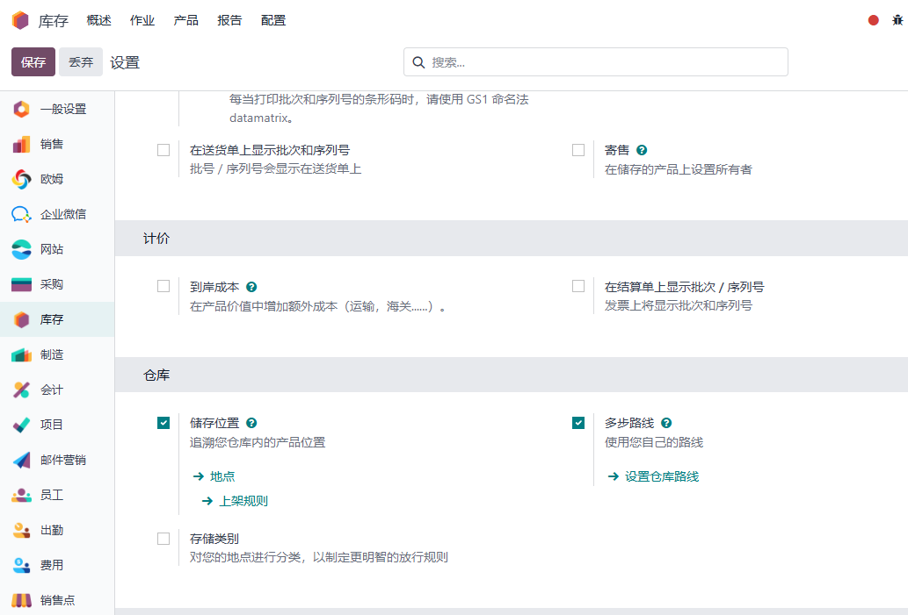
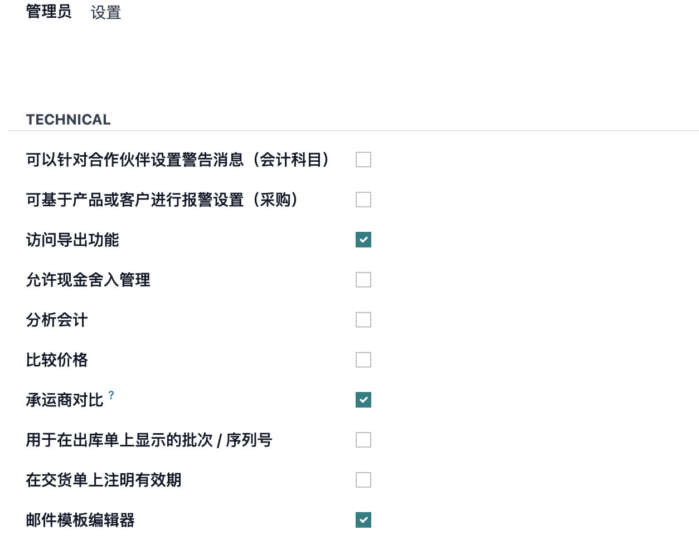
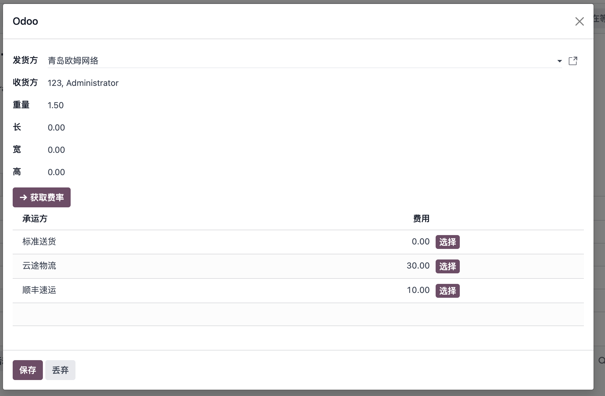

第十一章 物流方式
运费对比
前面讲了如何在odoo中使用各种承运商来完成运费查询和发货等操作，一个很自然的场景就出来了，当我们同时启用了多个物流方式的时候，我们自然希望在发货的时候能够选择性价比最高的那个进行发货。因此，我们需要有一个物流方式对比的功能。在我们的欧姆物流解决方案中，我们实现了这种对比功能，接下来，我们看一下如何使用。
开启送货运费对比功能
首先，我们需要到设置中，开启送货拓展和销售送货拓展(销售单运费对比)：

开启对比权限
开启了对比功能后，还需要在用户的技术特性中，开启承运商对比特性。

送货单运费对比
前面两步完成后，就可以到发货单上使用运费对比功能了。

点击运费对比：

我们在弹出的运费对比页面中，选择发货方、收货方地址，修改相应的货物重量和体积，就可以点击获取费率按钮来获取相应的运费信息。
用户根据列出来的运费对比，选择自己想要使用的承运方即可。选择完的承运方会自动带入到交货单中。
销售单运费对比
如果用户还希望在销售单上进行运费对比，那么可以在勾选销售运费拓展的前提下，在销售单上点击添加物流按钮：


可以看到，销售单的对比功能和发货单几乎一样。同样的，用户在选了自己想要的发货方式后，会自动填充到销售订单中。